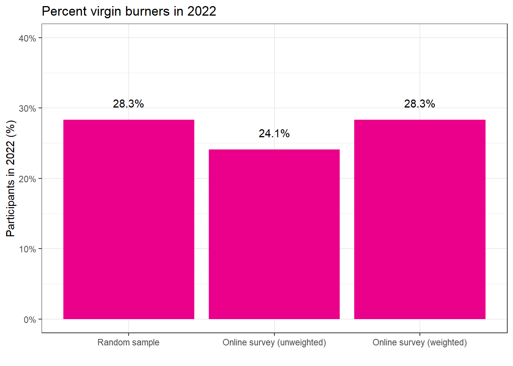

Chapter 1 Introduction
1.1 What is the Black Rock City Census?
The Census is a collaborative research project that started in 2002. Although the Black Rock City (BRC) Census project is technically a survey and not a literal census (where data is collected from every member of a population), our methodology allows us to report estimates that are representative of the entire population of BRC and not just on the individuals who participate actively in our data collection efforts.
While BRC Census has been producing reports since 2002, it is hard to compare recent data with reports from earlier years (before 2013) because of important differences in methodology, from a convenience sample of Census Lab visitors on-playa to a weighted online survey conducted post-event. The results in this report are estimates of the Black Rock City population. The true population values may differ from the presented estimates due to random variation in the sampling process. This report contains estimates from data collected in 2022 and, when possible, comparable estimates from 2013 through 2018.
The BRC Census project is made possible through the extensive collective effort of volunteers, academic researchers, and Burning Man Project. Our thanks to everyone whose contributions went into the creation of this report!
1.2 Methods
Since 2013, the BRC Census team has collected data in two phases: a random sample of participants entering the Burning Man event and a more comprehensive online survey after the event. During the Burning Man event in Black Rock City, Census volunteers conduct the random sample by administering a short socio-demographic survey to randomly selected Burners who agree to participate. After the event, announcements about the online survey are sent out via email lists, social media, the Burning Man website and through other various outreach programs. Results from the online survey are biased due to self-selection of Burners choosing to participate. To adjust for this bias we choose weights for the online survey responses so that answers to key questions asked on both surveys match.
All analyses were conducted using R version 4.2.2 (R Core Team 2022) and the anesrake (Pasek 2018) and survey (Lumley 2021) packages. Graphics were created using the ggplot2 (Wickham et al. 2023) package, and this report was constructed using R Bookdown (Xie 2023).
This study was performed in accordance with the Declaration of Helsinki. This human study was approved by University of Nevada, Reno, Research Integrity - IRBNet ID:1903458-1. All parents, guardians, or next of kin provided verbal consent for the minors to participate in this study. Verbal consent was taken from all other participants at the time of interviews. The verbal consent process was documented by interviewers at the time of the interview.
1.2.1 Random Sample
The random sample is designed with a goal of surveying 5% to 10% of the population of Black Rock City in a given year. The survey collection is stratified by location participants entered Black Rock City: the main gate, the airport, or on the Burner Express Bus (a shuttle service running from San Francisco and Reno into Black Rock City). Participants are chosen in a pseudo-random fashion by skipping a pre-selected number of cars driving in through gate or participants entering through the airport. Entire Burner Express Buses are randomly selected as a cluster sample.
The random sample collects data on 10 questions by giving selected participants a short paper form to fill out:
- Day of arrival
- Age
- Number of prior Burning Man events attended
- English as a first language
- Gender
- US Resident or not
- Voting eligibility in the US
- US political party affiliation
1.2.2 Online Survey
The online survey is live Tuesday the week following and remains available for approximately a month. The survey comprises questions in the random sample, demographic and socioeconomic questions, questions submitted by the Burning Man Organization, and questions submitted by academic researchers. Response rates for all surveys are given in the table below.
| Survey responses (n) | BRC Population | Response rate | |
|---|---|---|---|
| 2013 | 11,919 | 68,000 | 17% |
| 2014 | 11,676 | 68,000 | 18% |
| 2015 | 9,585 | 70,000 | 14% |
| 2016 | 7,137 | 70,000 | 11% |
| 2017 | 9,168 | 70,000 | 13% |
| 2018 | 8,745 | 70,000 | 12% |
| 2019 | 7,737 | 80,000 | 10% |
| 2022 | 8,382 | 87,000 | 10% |
1.2.3 Weighting
Results from the online survey are weighted to adjust for selection bias. Weights
are chosen so that the distribution of responses for questions that appear in
both the random sample and the online survey are nearly the same through a
process called post stratification or raking (Holt and Smith 1979; DeBell and Krosnick 2009).
For example, in 2022, the random
sample estimated 28.3% of participants were virgins (attending their first burn),
but only 24.1% of online sample particpants were virgins.
Weighting responses of the online brings this estimate up to 28.3% to match the random sample.
